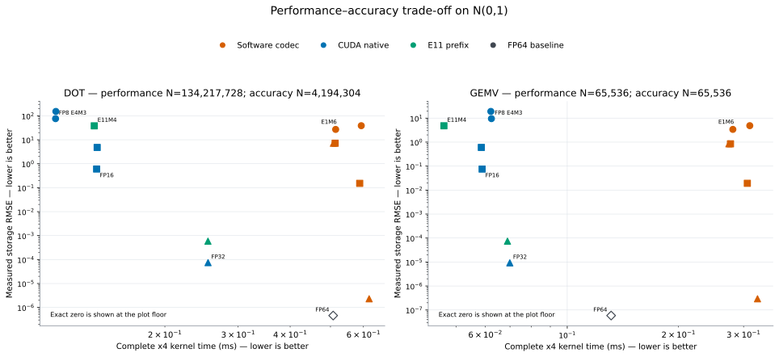

Accuracy overview
Measured H200 storage error, its analytical prediction, and the resulting performance–accuracy trade-off.
Performance–accuracy trade-off
This joins the large-kernel x4 timing with measured N(0,1) storage RMSE; points toward the lower-left are both faster and more accurate.

Validation scope
The GPU run contains 306 storage comparisons across DOT, GEMV, both distributions, all formats, and every tested N. 261 of 279 finite nonzero cases have measured MSE within 20% of the analytical prediction.
The DOT and GEMV pages separate the results by kernel, distribution, and storage width. The scalar page covers quantization events and the smaller FP64 arithmetic-only error.